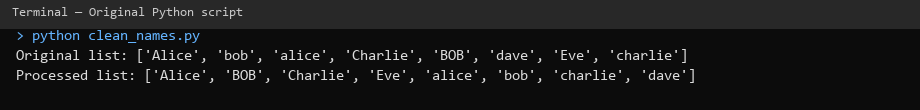
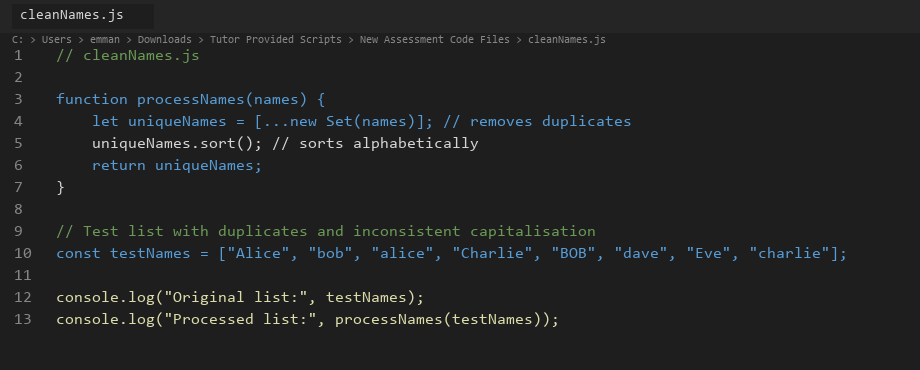
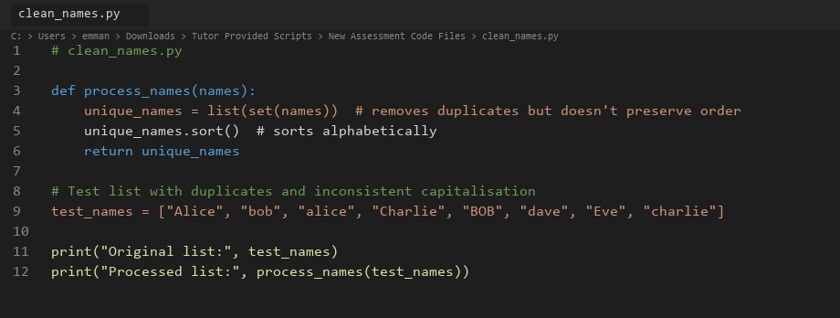
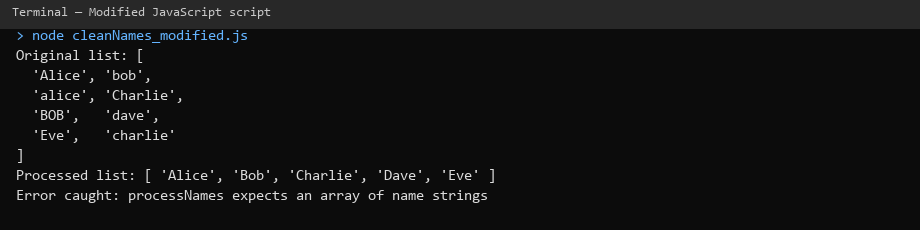
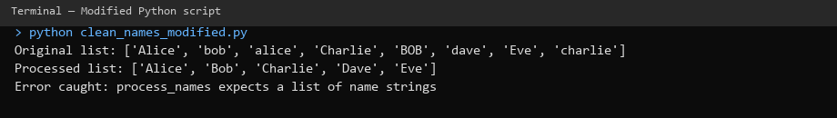
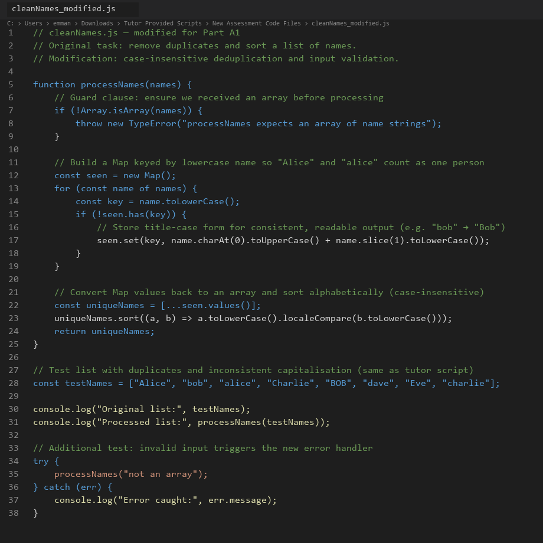
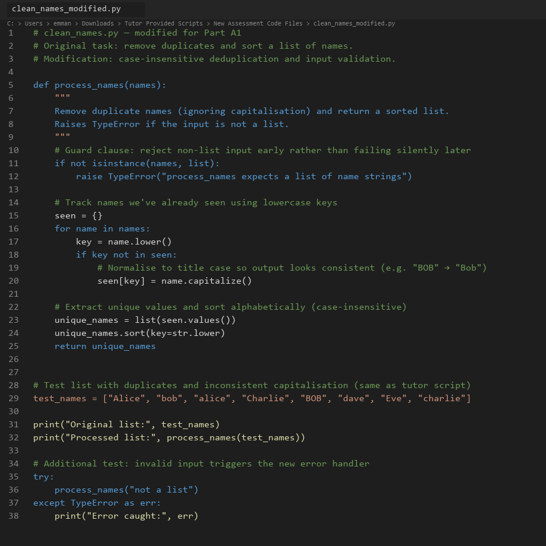
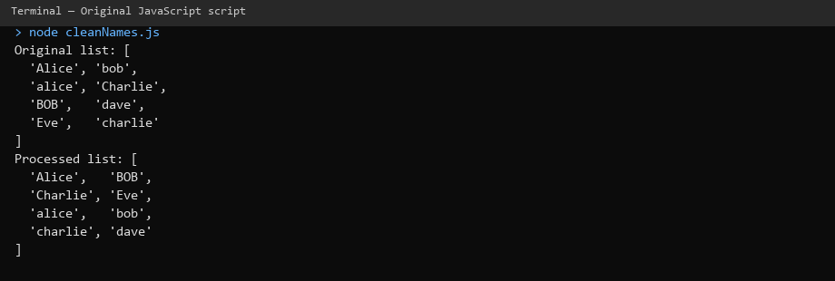

Unit 12
Module: Launch into Computing
Evaluating the Development Models of Two Programming Languages
Part A — Code Exploration
by Eziuche Emmanuel
Download originals: Part A PDF · Part A Word · Part B PowerPoint
1. Introduction
This section documents hands-on testing of two scripts (Python and JavaScript) that solve the same problem: take a list of personal names, remove duplicates, and return the result in alphabetical order. Both scripts appear straightforward at first glance, but running them reveals a subtle flaw that matters in real applications. The following sections describe what I observed, the modifications I made, and a brief comparison of the two implementations.
2. Running the Original Scripts
Figures 1 and 2 show the tutor-provided source code. I executed both files using the built-in test data:
["Alice", "bob", "alice", "Charlie", "BOB", "dave", "Eve", "charlie"]

Figures 3 and 4 show the console output from each original script:


The eight input names became eight output names. Duplicates such as "Alice" / "alice" and "bob" / "BOB" were not removed. This happens because both set() in Python and Set in JavaScript compare strings in a case-sensitive way (Python Software Foundation, 2024; Mozilla Developer Network, 2024). From a user's perspective the list still looks messy even after processing.
I also noticed that the default sort order groups capitalised names before lowercase ones ('Alice' before 'alice'). That is standard lexicographic (ASCII-based) sorting, not a bug in itself, but it makes the output harder to read when casing is inconsistent (McConnell, 2004).
To confirm behaviour with my own input, I temporarily changed the test list to include an empty string and a duplicate with extra whitespace (" bob "). Neither script handled these edge cases; whitespace duplicates were kept separate. That reinforced my view that the scripts work for a demo but would need hardening before use with real user data.
3. Modifications Made
For Part A1 I made one focused change to each script: case-insensitive deduplication with consistent title-case output, plus a simple input validation check. Figures 5 and 6 show the modified scripts with inline comments.


Python change: Before adding a name to the tracking dictionary, I convert it to lowercase for comparison. The first occurrence is stored in title case using .capitalize(). I also added isinstance(names, list) so passing a string raises a clear TypeError instead of iterating over characters silently.
JavaScript change: I replaced the one-line Set approach with a Map keyed by lowercase names, storing a normalised title-case value. I added Array.isArray() validation and used localeCompare() for sorting so alphabetical order ignores capitalisation.
Figures 7 and 8 show the improved output and error handling when invalid input is supplied:


Five unique people appeared instead of eight. When I deliberately passed invalid input ("not a list" / "not an array"), both modified scripts raised an explicit error message rather than producing nonsense output. Inline comments in the modified files explain each step: what the guard clause does, why lowercase keys are used, and how sorting differs from the original.
4. Comparing Syntax and Structure
At a structural level the two originals are nearly identical: define a function, deduplicate with a set-like structure, sort, return, then print test results. This reflects how both languages comfortably support procedural programming — a sequence of steps without classes or objects (Sommerville, 2016).
Differences appear in the details. Python uses def process_names(names): with snake_case naming, which aligns with PEP 8 style guidance (van Rossum et al., 2001). JavaScript uses function processNames(names) with camelCase, which is conventional in front-end and Node.js projects (MDN, 2024). Python's significant whitespace (indentation) enforces readable block structure; JavaScript relies on curly braces, which can be omitted in short scripts but are clearer for beginners.
For deduplication, Python's list(set(names)) is concise (one line) whereas JavaScript spreads a Set back into an array: [...new Set(names)]. I found Python slightly quicker to read for this task, but JavaScript's spread syntax is idiomatic once you are used to ES6 features (ECMA International, 2024).
5. Ease of Understanding and Editing
Both scripts are short enough that a new developer could understand them in a few minutes. Python felt marginally more approachable because it reads closer to plain English (print, def, list) and does not require knowledge of the spread operator. JavaScript's console.log and [...new Set()] assume familiarity with browser or Node tooling.
Editing was straightforward in both cases. I used VS Code for both files; Python gave immediate feedback when I forgot indentation, whereas JavaScript was more permissive. For the modification exercise, adding a loop and dictionary/map was equally easy in both languages, though Python's .capitalize() is built in while JavaScript needed manual string slicing for title case.
6. Differences in Output and Errors
With the original tutor scripts, output was logically the same across languages — eight names, same order — which confirms the algorithms are equivalent. Neither original script produced runtime errors with the provided test data; they fail silently from a data-quality perspective by leaving case duplicates in place. That kind of silent failure is arguably more dangerous than a crash, because downstream systems may treat "Alice" and "alice" as different people (O'Regan, 2024).
After modification, both scripts produced identical cleaned lists. Python raised TypeError; JavaScript raised TypeError via throw new Error — same conceptual behaviour, slightly different syntax. JavaScript's error message appeared in the console with a stack trace when run in Node; Python's traceback pointed to the exact line of the guard clause. Both were helpful for debugging.
7. Brief Conclusion to Part A1
Running and modifying these scripts showed me that two languages can solve the same problem with almost identical logic while differing in syntax, conventions, and tooling. The original scripts expose a realistic oversight — assuming clean, consistent input — that only becomes obvious when you test with messy data. Adding comments and validation turned a demo into something closer to production-aware code, which set the stage for the broader comparison in Part A2 and the ethical discussion in Part A3.
Part A2: Language Comparison Report
1. Introduction
Python and JavaScript are two of the most widely used languages in industry today, yet they evolved for different primary environments: Python from a general-purpose scripting background with strong uptake in science and automation, and JavaScript as the language of the web browser, later expanded to servers via Node.js (Stack Overflow, 2024). This report compares them across programming model, readability, error handling, and suitability for modern computing tasks, drawing on my practical work in Part A1 and on published sources.
2. Programming Model
Both languages used in the tutor scripts follow a procedural style: functions operate on data structures without defining classes. Neither Python nor JavaScript forces object-oriented design, though both support it fully. Python through class syntax and JavaScript through prototypes and ES6 classes (Sommerville, 2016).
Python is often described as multi-paradigm: developers commonly mix procedural scripts, object-oriented modules, and functional patterns such as list comprehensions and map()/filter(). The tutor script is idiomatic procedural Python.
JavaScript is similarly flexible. The original script uses a function declaration and built-in collection types, which is typical of small utilities. In larger applications, JavaScript often adopts event-driven and asynchronous models, callbacks, Promises, and async/await, especially for web APIs and user interfaces (Flanagan, 2020). That aspect did not surface in the name-cleaning exercise but is central to why JavaScript dominates interactive web development.
One practical difference I noticed: Python's standard library includes rich data structures out of the box, while JavaScript leans on language primitives (Set, Map, arrays) defined in the ECMAScript specification (ECMA International, 2024). For a ten-line script this is irrelevant; at scale it influences how teams structure projects.
3. Readability and Developer Accessibility
Readability affects maintenance cost, defect rates, and how quickly new team members contribute (McConnell, 2004). Python emphasises explicit, readable syntax — the "there should be one obvious way to do it" philosophy (van Rossum et al., 2001). Keywords like def, return, and significant indentation give visual structure without extra punctuation.
JavaScript shares C-style syntax familiar to developers coming from Java or C#, but historically suffered from inconsistencies (var vs let, type coercion). Modern ES6+ features improve clarity, though concepts like the spread operator require learning curve investment (MDN, 2024).
For accessibility to beginners, Python is frequently chosen in education because setup is simple and error messages for indentation or syntax are direct. JavaScript requires understanding where code runs (browser console, Node, or embedded runtime), which adds friction for novices but pays off for web projects.
Industry coding standards reinforce these cultures: PEP 8 for Python and tools like ESLint for JavaScript (van Rossum et al., 2001; ECMA International, 2024). In my edits, following snake_case in Python and camelCase in JavaScript was not optional polish, it signals to other developers that the code belongs in that ecosystem.
4. Error Handling and Debugging
The original tutor scripts include no validation, no try/except or try/catch, and no logging. Invalid input would either fail unpredictably or, worse, produce misleading output. This mirrors a common junior mistake: assuming happy-path data (O'Regan, 2024).
Python traditionally uses exceptions (try/except/finally) and encourages "easier to ask forgiveness than permission" (EAFP) for many patterns. Debuggers, print() debugging, and tools like pdb are well documented (Python Software Foundation, 2024). Static type checkers such as mypy are optional but growing in adoption.
JavaScript also uses exceptions, but many API failures in production are handled asynchronously — network errors surface in Promise rejections rather than synchronous stack traces (Flanagan, 2020). Browser DevTools provide excellent runtime inspection; Node.js offers similar tooling. TypeScript, a superset of JavaScript, adds compile-time type checking to reduce entire classes of errors before execution.
In my modified scripts, both languages benefited equally from a guard clause at the top of the function. Python's isinstance check and JavaScript's Array.isArray express the same intent. Where they differ is developer experience when errors occur: Python tracebacks highlight line numbers clearly; JavaScript stack traces in Node are comparable but historically varied across browsers.
For the name-cleaning task, either language is adequate for error handling. For large distributed systems, teams often weigh Python's simplicity against JavaScript/TypeScript's front-to-back stack unification.
5. Suitability for Modern Computing Tasks
Web applications: JavaScript (often with TypeScript) remains the default for client-side interactivity and, through Node.js and frameworks like React and Next.js, for full-stack development (Stack Overflow, 2024). If the name-cleaning function lived in a registration form, JavaScript would run it in the browser without a round trip to the server.
Data science and automation: Python dominates through libraries such as NumPy, pandas, and scikit-learn, and is standard in teaching and research (Grus, 2019). Cleaning inconsistent name fields in a CSV before analysis is exactly the kind of pipeline task Python excels at.
Scripting and glue code: Both languages work well. Python is often preferred for system administration and ETL jobs; JavaScript fits when the organisation already operates a Node-based toolchain.
Performance: For a small list of names, performance is irrelevant. At scale, both are interpreted languages; bottlenecks usually move to databases or native extensions rather than the choice between set() and Set (Sommerville, 2016).
Mobile and embedded: Neither tutor script targets these domains directly, but JavaScript via React Native and Python via MicroPython show how languages stretch beyond their origins with trade-offs in performance and ecosystem maturity.
6. Summary
Python and JavaScript overlap more than they did a decade ago, yet their communities, conventions, and typical deployment contexts remain distinct. For a short procedural utility, either language is a reasonable choice; the decision in industry usually depends on what surrounds the code — web stack, data pipeline and team skills — rather than raw algorithmic expressiveness. My Part A1 exercise reinforced that good practice (validation, normalisation, comments) matters more than language choice for a task this size, while language choice matters greatly when integrating that task into a wider product.
Part A3: Professional Reflection
1. Introduction
Software is rarely neutral. Small decisions — how duplicates are detected, whether input is validated, how names are capitalised — can affect fairness, compliance, and trust. This section reflects on readable and ethical coding, bias and privacy risks, and how choices in scripts like the tutor’s clean_names examples connect to real business and legal consequences. I draw on the ACM Code of Ethics, data protection law, and documented industry incidents.
2. The Importance of Readable, Ethical Code
Readable code is not merely aesthetic. McConnell (2004) argues that code is read far more often than it is written, so clarity directly reduces maintenance cost and mistakes. In the tutor scripts, sparse comments and one-line deduplication are compact but hide assumptions: that capitalisation is meaningful, that duplicates are exact string matches, and that input is always a valid list. Without comments, the next developer may copy the pattern into a customer database module without questioning those assumptions.
Ethical code goes further: it treats people affected by the system fairly and respects their data (ACM, 2018). The ACM principle “avoid harm” applies when duplicate records cause double billing, or when inconsistent name formatting prevents someone from accessing a service they are entitled to. My modification — normalising names before deduplication — is a small ethical improvement because it reduces the chance of treating one person as two.
Professional standards such as the BCS Code of Conduct similarly expect members to have due regard for public health, privacy, and dignity (BCS, 2022). Code reviews should ask not only “does it work?” but “who could be harmed if it works wrongly?”
3. Bias, Privacy, and Misuse in Programming
Bias can enter systems through training data, rule design, or — as in these scripts — simplistic string handling. Noble (2018) documents how apparently technical choices in search and classification systems can reinforce social inequalities. The tutor scripts do not use machine learning, but they illustrate normalisation bias: treating “BOB” and “bob” as different people could skew reports (e.g. attendance counts, fraud checks, diversity metrics).
Privacy matters because names are personal data under UK GDPR and EU GDPR (Information Commissioner’s Office, 2024). Processing names — collecting, deduplicating, storing — also requires a lawful basis, accuracy, and appropriate security. Silent duplication undermines data accuracy, one of the GDPR principles (European Union, 2016). An organisation that merges customer records incorrectly might disclose one person’s data to another — a serious breach with regulatory and reputational impact.
Misuse covers intentional abuse: scraping names for spam, combining lists without consent, or re-identifying individuals in anonymised datasets. Even benign utility functions can be repurposed. Developers should consider purpose limitation and document intended use (ICO, 2024).
4. Small Coding Choices, Real-World Impact
The tutor scripts feel trivial, but similar logic appears in production systems with larger stakes.
Case sensitivity in identity systems: Many login and CRM systems enforce case-insensitive email addresses but case-sensitive usernames — or the reverse. Inconsistent rules confuse users and create duplicate accounts. The original scripts’ behaviour mirrors that confusion at small scale.
Apple Card credit limits (2019): Apple and Goldman Sachs faced investigation after users reported that women received lower credit limits than men with similar financial profiles. Apple co-founder Steve Wozniak publicly stated his wife received a lower limit despite shared assets (BBC News, 2019). While the algorithm’s details were proprietary, the incident shows how automated decisions draw scrutiny under fairness and equality law.
Healthcare and emergency services: Duplicate patient records from inconsistent name entry have contributed to missed appointments and treatment errors (O’Regan, 2024). Deduplication that ignores capitalisation, nicknames, or transliteration is a known data-quality challenge.
Legal exposure: Under UK GDPR, data controllers must ensure personal data is accurate (Article 5(1)(d)). Failing to deduplicate case-insensitive duplicates could be argued as inaccuracy in a complaint to the ICO. For a business, the cost of fixing data quality at source is almost always lower than cleaning up after a breach, a failed audit, or reputational damage (Sommerville, 2016).
5. Lessons from My Modifications
Adding validation and case-insensitive deduplication took fewer than twenty lines in each language but changed outcomes dramatically — from eight names to five, and from silent acceptance of bad input to explicit errors. That aligns with fail-fast design: surface problems early (McConnell, 2004).
I also documented assumptions in comments so future maintainers understand why lowercase keys are used. That supports ethical handover: the next person is less likely to revert to a harmful pattern without realising it.
From a professional standpoint, I would expect this code to include unit tests (e.g. inputs with mixed case, empty lists, invalid types) before deployment. Neither tutor script included tests; adding them would be the next step in a workplace setting.
6. Conclusion
Programming is a social and legal activity, not only a technical one. The tutor’s Python and JavaScript scripts are useful teaching tools precisely because their flaws are realistic: they run without crashing yet produce misleading results. Part A1 showed how testing reveals those flaws; Part A2 showed that either language can express fixes cleanly; Part A3 argues that the responsibility to fix them — and to think about bias, privacy, and harm — rests with the developer and the organisation, not the interpreter.
As computing professionals, we should write code that colleagues can read, users can trust, and regulators can see meets basic data-quality expectations. Small choices in a ten-line script are practice for much larger decisions later in a career.
References (Part A)
- ACM (2018) ACM Code of Ethics and Professional Conduct. Available at: https://www.acm.org/code-of-ethics (Accessed: 20 July 2026).
- BBC News (2019) ‘Apple Card investigated after gender discrimination claims’, BBC News, 10 November. Available at: https://www.bbc.co.uk/news/business-50388439 (Accessed: 15 July 2026).
- BCS (2022) BCS Code of Conduct. Available at: https://www.bcs.org/membership-and-registrations/become-a-member/bcs-code-of-conduct/ (Accessed: 15 July 2026).
- ECMA International (2024) ECMAScript Language Specification. Available at: https://tc39.es/ecma262/ (Accessed: 16 July 2026).
- European Union (2016) General Data Protection Regulation (GDPR), Regulation (EU) 2016/679. Available at: https://eur-lex.europa.eu/legal-content/EN/TXT/?uri=CELEX:32016R0679 (Accessed: 15 July 2026).
- Flanagan, D. (2020) JavaScript: The Definitive Guide. 7th edn. Sebastopol: O’Reilly Media.
- Grus, J. (2019) Data Science from Scratch. 2nd edn. Sebastopol: O’Reilly Media.
- Information Commissioner’s Office (2024) Guide to the UK GDPR. Available at: https://ico.org.uk/for-organisations/guide-to-data-protection/guide-to-the-general-data-protection-regulation-gdpr/ (Accessed: 19 July 2026).
- McConnell, S. (2004) Code Complete. 2nd edn. Redmond: Microsoft Press.
- Mozilla Developer Network (2024) JavaScript reference. Available at: https://developer.mozilla.org/en-US/docs/Web/JavaScript/Reference (Accessed: 16 July 2026).
- Noble, S.U. (2018) Algorithms of Oppression. New York: NYU Press.
- O’Regan, G. (2024) Introduction to Software Quality. Cham: Springer.
- Python Software Foundation (2024) Python 3 Documentation. Available at: https://docs.python.org/3/ (Accessed: 16 July 2026).
- Sommerville, I. (2016) Software Engineering. 10th edn. Harlow: Pearson.
- Stack Overflow (2024) Developer Survey 2024. Available at: https://survey.stackoverflow.co/2024/ (Accessed: 17 July 2026).
- van Rossum, G., Warsaw, B. and Coghlan, N. (2001) PEP 8 – Style Guide for Python Code. Available at: https://peps.python.org/pep-0008/ (Accessed: 15 July 2026).
Critically Evaluating Artificial Intelligence as an Emerging Technology
Part B — Presentation
Download: Part B PowerPoint presentation
Research-Based Response
Evaluation: AI is high-value but not neutral; it amplifies bias, opacity and attack surface at scale (Jobin, Ienca and Vayena, 2019). Enterprises must balance three pillars: technical controls (secure MLOps, testing), regulation (AI Act, GDPR, NIST), and ethical culture (oversight, auditing) (NIST, 2023). Method: peer-reviewed papers, EU/UK law, and industry reports — each source verified independently.
Connection to Part A: minor data-quality flaws in scripts mirror production CRM/HR pipelines (O’Regan, 2024 — equivalent logic in name deduplication). Argument: innovation without governance creates legal and reputational debt, not competitive advantage (Floridi et al., 2018). AI adoption is mainstream in development tooling (Stack Overflow, 2024) — professional duty to evaluate risks follows.
Technical Overview of Artificial Intelligence
AI umbrella: machine learning finds patterns; deep learning uses neural networks; generative AI (LLMs) predicts text (Russell and Norvig, 2021). Enterprise lifecycle: collect data → train → validate → deploy → monitor — ongoing loop, not one project (NIST, 2023). Generative AI does not understand meaning; fluent output can mislead users (Bender et al., 2021 — ‘Stochastic Parrots’).
Deployment: cloud APIs (Azure OpenAI, Bedrock), custom models, embedded analytics in CRM/ERP systems. Technical benefit: speed and scale of prediction and automation across millions of records. Technical risk: errors, adversarial inputs, and model drift propagate as fast as automation (NIST, 2023).
Real-World Enterprise Applications
Finance: ML for fraud detection and anti-money-laundering; AI pipelines hold sensitive transaction data (IBM, 2024). Healthcare: AI-assisted triage and documentation — requires clinical validation before patient-facing use. HR: automated CV screening and LLM chatbots; Amazon recruiting tool scrapped after gender bias (Dastin, 2018). Retail: recommendation engines and demand forecasting; data quality directly affects revenue (Grus, 2019).
McKinsey (2024): generative AI economic potential is large, but governance often lags deployment. Lesson from Amazon case: optimising historical data can encode discrimination — technical success ≠ ethical acceptability (Dastin, 2018).
Ethical Concerns
Bias and fairness: Buolamwini and Gebru (2018) Gender Shades study found higher facial recognition error rates for darker-skinned women; disparate impact in access systems. Opacity and accountability: Mittelstadt et al. (2016) — ‘black box’ decisions undermine due process when algorithms affect rights. Human dignity: Floridi et al. (2018) — AI must support human agency; full automation in dismissal, credit, or care decisions raises ethical red flags.
Social harm and data ethics: Noble (2018) — search/classification systems can reinforce inequality; Bender et al. (2021) — consent, labour, environmental costs of training. Professional codes: ACM (2018) ‘avoid harm’; BCS (2022) — privacy and dignity. Practical response: algorithmic auditing before and after deployment (Raji et al., 2020).
Security Concerns
Data breaches: IBM (2024) reports global average breach cost of $4.88M; AI centralises training and inference data — higher impact if compromised. Adversarial attacks: crafted inputs fool classifiers; data poisoning corrupts models during training (NIST, 2023). Generative AI threats: OWASP (2024) LLM Top 10 includes prompt injection, insecure output handling, and model denial-of-service.
Supply-chain risk: third-party APIs — limited visibility into training data and updates. Social engineering: deepfakes and voice clones used in CEO fraud and phishing at scale. Enterprise response: MLOps security, adversarial red-teaming, access controls, incident plans for model drift (NIST, 2023). Balancing innovation: secure-by-design AI reduces cost of breach vs retrofitting controls after deployment (IBM, 2024).
Regulatory and Governance Frameworks
EU AI Act (European Parliament, 2024): risk-based — bans unacceptable uses; strict rules for high-risk AI (employment, credit, critical infra). GDPR (European Union, 2016): accuracy, lawful basis, security; Article 5(1)(d) accuracy principle for personal data. ICO (2024): UK AI guidance — Data Protection Impact Assessments for high-risk automated processing. NIST AI RMF (2023): Govern | Map | Measure | Manage. ISO/IEC 42001: certifiable AI management system.
Jobin, Ienca and Vayena (2019): 80+ ethics guidelines agree on principles but lack enforcement — internal auditing essential (Raji et al., 2020). Conclusion: AI is a transformative emerging technology; enterprises balance innovation with security and ethics via governance, regulation, and culture (NIST, 2023; Floridi et al., 2018). GenAI is useful for drafts — never a substitute for verified research and professional accountability.
Generative AI Response (Same Brief)
Ethics (AI-generated): “AI raises important ethical issues. Bias in training data can cause discriminatory outcomes against minority groups. Many AI systems operate as ‘black boxes’ making it difficult to explain decisions.”
Balancing innovation (AI-generated): “To balance innovation with responsibility, enterprises should establish AI governance committees, conduct ethical impact assessments before deployment, maintain human oversight for critical decisions.”
Case study (AI-generated): “A well-known example is Amazon’s AI recruiting tool, which was reportedly discontinued after showing bias against women because it was trained on historical hiring data dominated by male candidates (Reuters, 2018).”
Critical Comparison — Human Research vs Generative AI
Accuracy and reliability of sources: Human response uses verified Harvard refs (Bender et al., 2021; European Parliament, 2024). AI cited ‘Reuters, 2018’ incompletely; some claims lacked traceable evidence. Depth and nuance: Human analysis covers GDPR + LLM fine-tuning trade-offs, supply-chain risk, sector validation. AI listed risks generically without weighing conflicts (Mittelstadt et al., 2016).
Ethical issues (bias, transparency, hallucinations): AI mentioned bias/black boxes but not its own hallucination risk; confident AI prose misleads readers (Bender et al., 2021). Professional appropriateness: GenAI acceptable for brainstorming; unacceptable unchecked for graded or client work (BCS, 2022; ACM, 2018). Reflection supports: fast outline, literature prompts, slide structure. Hinders: skips verification, creates false confidence, weak citations. Conclusion: human critical evaluation remains mandatory; GenAI is assistant, not author.
References (Part B)
- ACM (2018) ACM Code of Ethics and Professional Conduct. Available at: https://www.acm.org/code-of-ethics (Accessed: 20 July 2026).
- BCS (2022) BCS Code of Conduct. Available at: https://www.bcs.org/membership-and-registrations/become-a-member/bcs-code-of-conduct/ (Accessed: 20 July 2026).
- Bender, E.M., Gebru, T., McMillan-Major, A. and Shmitchell, S. (2021) ‘On the Dangers of Stochastic Parrots’, Proceedings of FAccT, pp. 610–623.
- Buolamwini, J. and Gebru, T. (2018) ‘Gender Shades’, Proceedings of Machine Learning Research, 81, pp. 1–15.
- Dastin, J. (2018) ‘Amazon scraps secret AI recruiting tool’, Reuters, 10 October. Available at: https://www.reuters.com/article/us-amazon-com-jobs-automation-insight-idUSKCN1MK08G (Accessed: 20 July 2026).
- European Parliament (2024) Regulation (EU) 2024/1689 (Artificial Intelligence Act). Available at: https://eur-lex.europa.eu/legal-content/EN/TXT/?uri=CELEX:32024R1689 (Accessed: 20 July 2026).
- European Union (2016) General Data Protection Regulation, Regulation (EU) 2016/679. Available at: https://eur-lex.europa.eu/legal-content/EN/TXT/?uri=CELEX:32016R0679 (Accessed: 20 July 2026).
- Floridi, L. et al. (2018) ‘AI4People’, Minds and Machines, 28(4), pp. 689–707.
- Grus, J. (2019) Data Science from Scratch. 2nd edn. Sebastopol: O’Reilly Media.
- IBM (2024) Cost of a Data Breach Report 2024. Available at: https://www.ibm.com/reports/data-breach (Accessed: 20 July 2026).
- Information Commissioner’s Office (2024) Guidance on AI and data protection. Available at: https://ico.org.uk/for-organisations/uk-gdpr-guidance-and-resources/artificial-intelligence/ (Accessed: 20 July 2026).
- Jobin, A., Ienca, M. and Vayena, E. (2019) ‘The global landscape of AI ethics guidelines’, Nature Machine Intelligence, 1(9), pp. 389–399.
- McKinsey & Company (2024) The state of AI in early 2024. Available at: https://www.mckinsey.com/capabilities/quantumblack/our-insights (Accessed: 20 July 2026).
- Mittelstadt, B.D. et al. (2016) ‘The ethics of algorithms’, Big Data & Society, 3(2), pp. 1–21.
- NIST (2023) Artificial Intelligence Risk Management Framework (AI RMF 1.0). Gaithersburg: NIST.
- Noble, S.U. (2018) Algorithms of Oppression. New York: NYU Press.
- OWASP (2024) OWASP Top 10 for LLM Applications. Available at: https://owasp.org/www-project-top-10-for-large-language-model-applications/ (Accessed: 20 July 2026).
- Raji, I.D. et al. (2020) ‘Closing the AI accountability gap’, Proceedings of FAccT, pp. 33–44.
- Russell, S. and Norvig, P. (2021) Artificial Intelligence: A Modern Approach. 4th edn. Harlow: Pearson.
- Stack Overflow (2024) Developer Survey 2024. Available at: https://survey.stackoverflow.co/2024/ (Accessed: 20 July 2026).